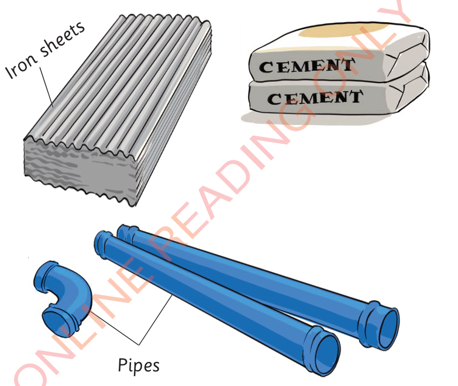
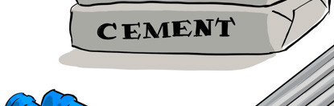
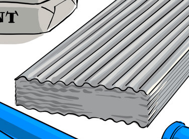
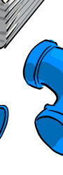

(iii) Building materials such as cement, lime, iron sheets, pipes, steel and tiles.These are used for building infrastructure such as houses and bridges.Figure 9 shows building materials.




Figure 9: Building materials
(iv) Equipment for investigation and diagnosis of diseases.An example of such equipment is a microscope as indicated in Figure 10.